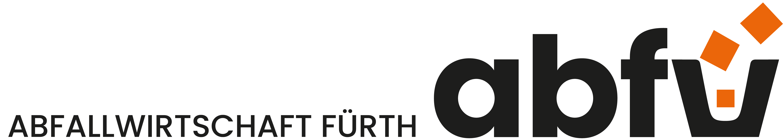

🌙 Dark Mode

FAQ
🗑️ Abfallberatung ▼
Was darf in die Biotonne?
Küchenabfälle, Gartenabfälle, Kaffeesatz u.v.m.
Wo finde ich Infos zur Mülltrennung?
Telefonisch unter 0911-9742080 oder per Mail an abfallberatung@fuerth.de
📦 Sperrmüll ▼
Wie melde ich Sperrmüll an?
Online unter www.fuerth.de/sperrmuell oder telefonisch unter 0911-9741260.
Was kostet die Abholung?
20 € pro Termin.
🚛 Mülltonnen ▼
Wie bestelle ich eine neue Mülltonne?
Platzhalter.
Was tun bei beschädigter Tonne?
Platzhalter.
🏭 Wertstoffhöfe ▼
Wann ist der Wertstoffhof geöffnet?
Mo–Fr 8–17 Uhr, Sa 8–13 Uhr.
Was kann ich dort abgeben?
Elektroschrott, Metalle, Holz, Farben, Möbel u.v.m.
❓ Allgemeine Fragen ▼
Wo finde ich den Abfallkalender?
Platzhalter.
Wie kann ich meine Adresse ändern?
Platzhalter.
🌳 Wilder Müll ▼
Wie melde ich wilden Müll?
Platzhalter.
Wer ist zuständig?
Platzhalter.
🟡 Gelber Sack ▼
Was gehört hinein?
Leichtverpackungen aus Kunststoff, Metall oder Verbundstoffen.
Wo bekomme ich neue Säcke?
Platzhalter.